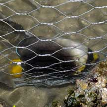
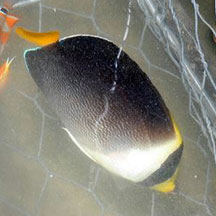

|
|
| fishes text index | photo index |
| Phylum Chordata > Subphylum Vertebrata > fishes |
| Angelfishes Family Pomacanthidae updated Sep 2020 Where seen? These fishes are rarely seen naturally on the shore at low tide. They are more often encountered by divers in deeper waters. Those we've seen were sadly captured in fish traps or already in a fish tank. What are angelfishes? They belong to Family Pomacanthidae which has 9 genera and 74 species. They are found in the Atlantic, Indian and Pacific oceans. They are closely related to the butterflyfishes (Family Chaetodontidae) and were previously placed in the butterflyfish family. Features: Their bodies are flattened sideways with an overall shape that is rather rectangular. In many anglefish species, the juveniles are often very different from the adults, with strikingly different colours and patterns. There have been many theories about the purpose of the dazzling patterns of these fishes, but none have been proved with certainty. One theory is that the patterns break up the body outline under the patches of shadows and sunlight in the colourful reef environment where they are found. Some large species can produce a loud drumming or thumping sound. Most adults depend on shelter such as caves, rock- or coral-crevices. In the wild, they are seldom sighted in the open. They are mostly bottom feeders, dashing back and forth from feeding to their shelters. |
 Yellowtail or Vermiculated anglefish caught in a fish trap. Kusu Island, Jun 04 |
 The juvenile looks very different. Tanah Merah, Apr 11 |
| What do they eat? As a family,
they eat a wide variety of things. These include filamentous algae,
zooplankton as well as sponges, small animals and fish eggs. Angelfish babies: Most can change gender (protogynous hermaphrodites) and have a social system of one male with a harem of females. The male usually has 2-5 females in his harem and is territorial, claiming about a few square metres to more than 1,000 square metres as his territory. They usually spawn at sunset. The male performs a courtship display when a female approaches; involving fin raising, rapid swimming back and forth, and quivering his body. The male and female then slowly spiral towards the surface and suddenly release eggs and sperm simultaneously into the water before swimming back to the bottom. The male may mate with several females one after another. Human uses: Many members of this family are harvested from the wild for the live aquarium trade. Status and threats: Some members of the Family Pomacanthidae are listed among the threatened animals of Singapore. Like other creatures of the intertidal zone, they are affected by human activities such as reclamation and pollution. Poaching by hobbyists and overfishing can also have an impact on local populations. |
| Some Angelfishes on Singapore shores |
 Yellowtail or Vermiculated anglefish |
 Blue-ring angelfish |
| Family
Pomacanthidae recorded for Singapore from Wee Y.C. and Peter K. L. Ng. 1994. A First Look at Biodiversity in Singapore. **from WORMS +Other additions (Singapore BIodiversity Records, etc)
|
Links
|